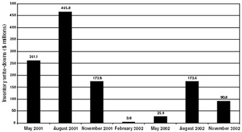

You can get ripped off easier by a dude with a pen than you can by a dude with a gun.
—Bo Diddley
Even Graham would have been startled by the extent to which companies and their accountants pushed the limits of propriety in the past few years. Compensated heavily through stock options, top executives realized that they could become fabulously rich merely by increasing their company’s earnings for just a few years running. 1 Hundreds of companies violated the spirit, if not the letter, of accounting principles—turning their financial reports into gibberish, tarting up ugly results with cosmetic fixes, cloaking expenses, or manufacturing earnings out of thin air. Let’s look at some of these unsavory practices.
Perhaps the most widespread bit of accounting hocus-pocus was the “pro forma” earnings fad. There’s an old saying on Wall Street that every bad idea starts out as a good idea, and pro forma earnings presentation is no different. The original point was to provide a truer picture of the long-term growth of earnings by adjusting for short-term deviations from the trend or for supposedly “nonrecurring” events. A pro forma press release might, for instance, show what a company would have earned over the past year if another firm it just acquired had been part of the family for the entire 12 months.
But, as the Naughty 1990s advanced, companies just couldn’t leave well enough alone. Just look at these examples of pro forma flim-flam:
In short, pro forma earnings enable companies to show how well they might have done if they hadn’t done as badly as they did. 2 As an intelligent investor, the only thing you should do with pro forma earnings is ignore them.
In 2000, Qwest Communications International Inc., the telecommunications giant, looked strong. Its shares dropped less than 5% even as the stock market lost more than 9% that year.
But Qwest’s financial reports held an odd little revelation. In late 1999, Qwest decided to recognize the revenues from its telephone directories as soon as the phone books were published—even though, as anyone who has ever taken out a Yellow Pages advertisement knows, many businesses pay for those ads in monthly installments. Abracadabra! That piddly-sounding “change in accounting principle” pumped up 1999 net income by $240 million after taxes—a fifth of all the money Qwest earned that year.
Like a little chunk of ice crowning a submerged iceberg, aggressive revenue recognition is often a sign of dangers that run deep and loom large—and so it was at Qwest. By early 2003, after reviewing its previous financial statements, the company announced that it had prematurely recognized profits on equipment sales, improperly recorded the costs of services provided by outsiders, inappropriately booked costs as if they were capital assets rather than expenses, and unjustifiably treated the exchange of assets as if they were outright sales. All told, Qwest’s revenues for 2000 and 2001 had been overstated by $2.2 billion—including $80 million from the earlier “change in accounting principle,” which was now reversed. 3
In the late 1990s, Global Crossing Ltd. had unlimited ambitions. The Bermuda-based company was building what it called the “first integrated global fiber optic network” over more than 100,000 miles of cables, largely laid across the floor of the world’s oceans. After wiring the world, Global Crossing would sell other communications companies the right to carry their traffic over its network of cables. In 1998 alone, Global Crossing spent more than $600 million to construct its optical web. That year, nearly a third of the construction budget was charged against revenues as an expense called “cost of capacity sold.” If not for that $178 million expense, Global Crossing—which reported a net loss of $96 million—could have reported a net profit of roughly $82 million.
The next year, says a bland footnote in the 1999 annual report, Global Crossing “initiated service contract accounting.” The company would no longer charge most construction costs as expenses against the immediate revenues it received from selling capacity on its network. Instead, a major chunk of those construction costs would now be treated not as an operating expense but as a capital expenditure—thereby increasing the company’s total assets, instead of decreasing its net income. 4
Poof! In one wave of the wand, Global Crossing’s “property and equipment” assets rose by $575 million, while its cost of sales increased by a mere $350 million—even though the company was spending money like a drunken sailor.
Capital expenditures are an essential tool for managers to make a good business grow bigger and better. But malleable accounting rules permit managers to inflate reported profits by transforming normal operating expenses into capital assets. As the Global Crossing case shows, the intelligent investor should be sure to understand what, and why, a company capitalizes.
Like many makers of semiconductor chips, Micron Technology, Inc. suffered a drop in sales after 2000. In fact, Micron was hit so hard by the plunge in demand that it had to start writing down the value of its inventories—since customers clearly did not want them at the prices Micron had been asking. In the quarter ended May 2001, Micron slashed the recorded value of its inventories by $261 million. Most investors interpreted the write-down not as a normal or recurring cost of operations, but as an unusual event.
But look what happened after that:
FIGURE 12-1
A Block of the Old Chips

Source: Micron Technology’s financial reports.
Micron booked further inventory write-downs in every one of the next six fiscal quarters. Was the devaluation of Micron’s inventory a nonrecurring event, or had it become a chronic condition? Reasonable minds can differ on this particular case, but one thing is clear: The intelligent investor must always be on guard for “nonrecurring” costs that, like the Energizer bunny, just keep on going. 5
In 2001, SBC Communications, Inc., which owns interests in Cingular Wireless, PacTel, and Southern New England Telephone, earned $7.2 billion in net income—a stellar performance in a bad year for the overextended telecom industry. But that gain didn’t come only from SBC’s business. Fully $1.4 billion of it—13% of the company’s net income—came from SBC’s pension plan.
Because SBC had more money in the pension plan than it estimated was necessary to pay its employees’ future benefits, the company got to treat the difference as current income. One simple reason for that surplus: In 2001, SBC raised the rate of return it expected to earn on the pension plan’s investments from 8.5% to 9.5%—lowering the amount of money it needed to set aside today.
SBC explained its rosy new expectations by noting that “for each of the three years ended 2001, our actual 10-year return on investments exceeded 10%.” In other words, our past returns have been high, so let’s assume that our future returns will be too. But that not only flunked the most rudimentary tests of logic, it flew in the face of the fact that interest rates were falling to near-record lows, depressing the future returns on the bond portion of a pension portfolio.
The same year, in fact, Warren Buffett’s Berkshire Hathaway lowered the expected rate of return on its pension assets from 8.3% to 6.5%. Was SBC being realistic in assuming that its pension-fund managers could significantly outperform the world’s greatest investor? Probably not: In 2001, Berkshire Hathaway’s pension fund gained 9.8%, but SBC’s pension fund lost 6.9%. 6
Here are some quick considerations for the intelligent investor: Is the “net pension benefit” more than 5% of the company’s net income? (If so, would you still be comfortable with the company’s other earnings if those pension gains went away in future years?) Is the assumed “long-term rate of return on plan assets” reasonable? (As of 2003, anything above 6.5% is implausible, while a rising rate is downright delusional.)
A few pointers will help you avoid buying a stock that turns out to be an accounting time bomb:
Read backwards. When you research a company’s financial reports, start reading on the last page and slowly work your way toward the front. Anything that the company doesn’t want you to find is buried in the back—which is precisely why you should look there first.
Read the notes. Never buy a stock without reading the footnotes to the financial statements in the annual report. Usually labeled “summary of significant accounting policies,” one key note describes how the company recognizes revenue, records inventories, treats installment or contract sales, expenses its marketing costs, and accounts for the other major aspects of its business. 7 In the other footnotes, watch for disclosures about debt, stock options, loans to customers, reserves against losses, and other “risk factors” that can take a big chomp out of earnings. Among the things that should make your antennae twitch are technical terms like “capitalized,” “deferred,” and “restructuring”—and plain-English words signaling that the company has altered its accounting practices, like “began,” “change,” and “however.” None of those words mean you should not buy the stock, but all mean that you need to investigate further. Be sure to compare the footnotes with those in the financial statements of at least one firm that’s a close competitor, to see how aggressive your company’s accountants are.
Read more. If you are an enterprising investor willing to put plenty of time and energy into your portfolio, then you owe it to yourself to learn more about financial reporting. That’s the only way to minimize your odds of being misled by a shifty earnings statement. Three solid books full of timely and specific examples are Martin Fridson and Fernando Alvarez’s Financial Statement Analysis, Charles Mulford and Eugene Comiskey’s The Financial Numbers Game, and Howard Schilit’s Financial Shenanigans. 8